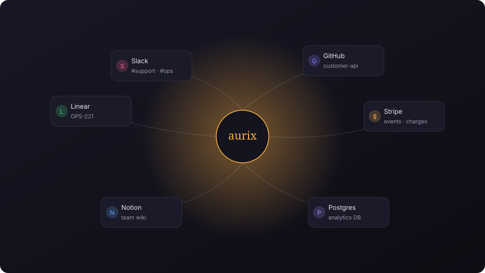
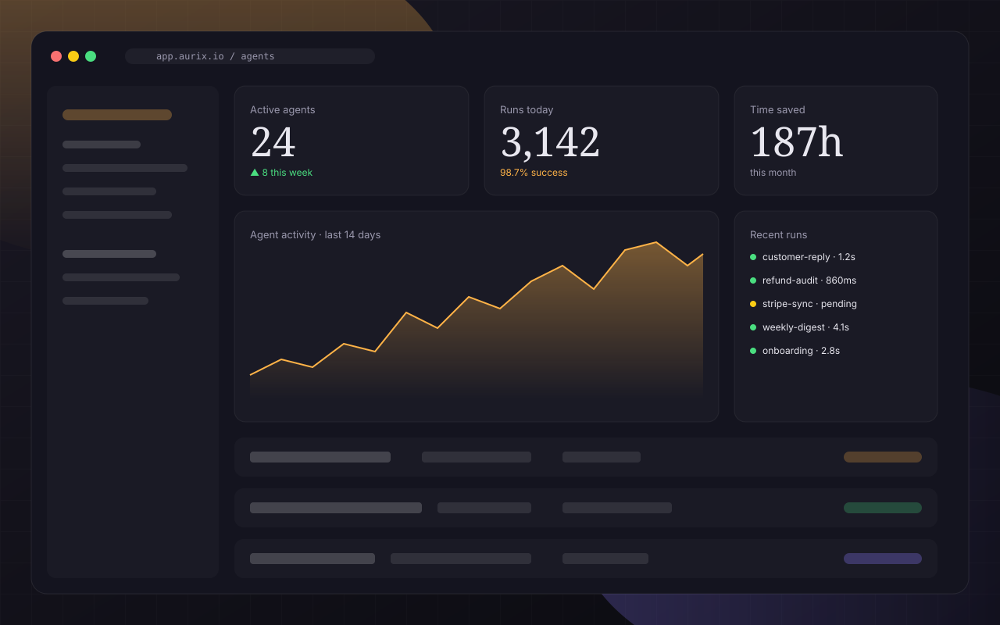

Context engine
Reads what your team reads.
Point Aurix at Slack, GitHub, Linear, email, or a folder. It builds a private index in minutes, no fine-tuning, no leaked data.

New · Aurix v2 agents are live
Aurix connects to your stack, watches for patterns, and ships the follow-up, the update, the summary — so you can get back to the actual job.

Running quietly inside
Product
Not another chatbot. Aurix deploys focused agents that read context, act with permission, and log everything.
Context engine
Point Aurix at Slack, GitHub, Linear, email, or a folder. It builds a private index in minutes, no fine-tuning, no leaked data.

Triggers
Webhook, schedule, mention, label, or "just watch that channel."
Safe actions
Approvals via Slack DM. Full rollback on every write.
Observability
See the full trace — inputs, model calls, tool calls, outputs. Replay any run. Diff any change.
Tool library
Pre-built for Gmail, GCal, HubSpot, Notion, Postgres, S3. Or drop in any OpenAPI spec and Aurix wires it.
How it works
OAuth into the tools your team uses. Aurix indexes context privately — no training, no leaving your org.
"When a Stripe refund over $200 comes in, draft the apology, tag the CX lead, link the invoice." Plain English.
First runs land in your inbox. Approve inline. Aurix learns your voice, gets faster, asks less.
Who uses it
“We replaced a weekly 4-hour ops meeting with one Aurix agent. It summarizes, assigns, and pings only when something is genuinely off.”
“Our support team ships replies in 90 seconds instead of 14 minutes. Aurix drafts, we approve, customers are happier.”
“The approval-first model is the thing. I actually trust an agent to touch Stripe because I can veto anything in one tap.”
Pricing
Every plan includes unlimited teammates, full logs, and approval workflows.
$0/ forever
For solo tinkerers shipping their first agent.
$39/ month, usage-based after
For growing teams that want approvals, SSO, and real limits.
Customannual
For regulated teams with VPC, audit, and custom retention.
FAQ
No. Your content stays in your workspace. We use it to respond to agent runs, never to train base models.
Aurix routes across frontier models (Anthropic, OpenAI, Google) and can be pinned to a single provider on Team and Enterprise plans.
Yes. Enterprise customers can deploy Aurix in their own VPC with customer-managed KMS keys.
Every write action has a rollback. Runs are audited, diffable, and replayable. You can also gate any action behind a human approval.
About fifteen minutes for a first agent. Most teams ship three in the first week.
Yes. Seed-stage startups get the Team plan free for 12 months. Email founders@aurix.example.